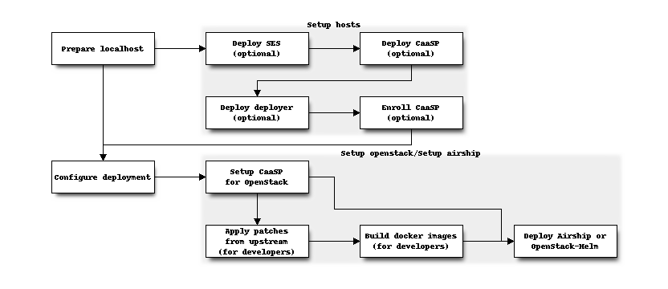

Overview¶
This guide refers to the following type of hosts:
- A localhost, which runs shell scripts and ansible playbooks. This can be your CI node, or your development laptop.
- A deployer, which is your point of access to your kubernetes cluster. The deployer can be the same as the localhost, but it is not a requirement.
- A series of CaaSP nodes: workers, admin, master.
- A series of SES nodes.
The following diagram shows the general workflow of a deployment from scratch:

Installation requirements¶
Your environment should be setup with the following:
- localhost can run any OS. Please check its software requirements on the page Prepare localhost.
- deployer must run openSUSE Leap 15 or SLE15. Those must have all the deployment tools available. See more details on the page Prepare the target hosts. If you are not coming with your own node for deployer, this tooling can create one for you (currently only on OpenStack).
- The CaaSP cluster must run CaaSP version 3. If you are not coming with your own CaaSP cluster, this tooling can create one for you (currently only on OpenStack).
- The SES cluster must run SES 5. If you are not coming with your own SES cluster, this tooling can create an “All-in-one” node for SES for you (currently only on OpenStack).